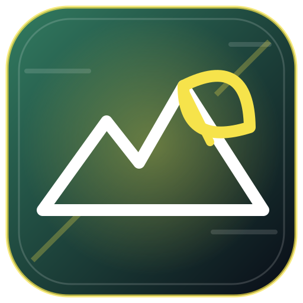
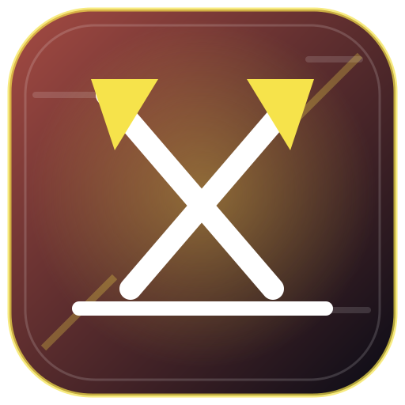
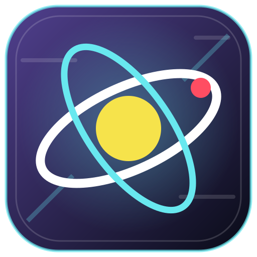
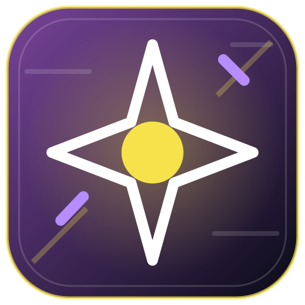
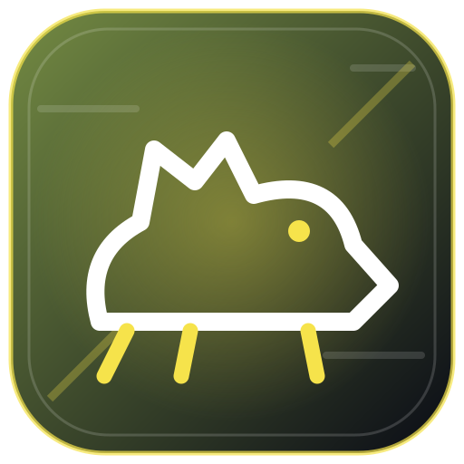
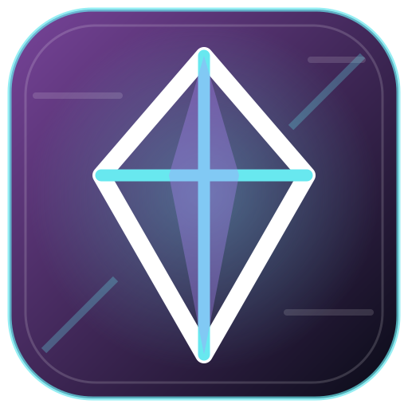
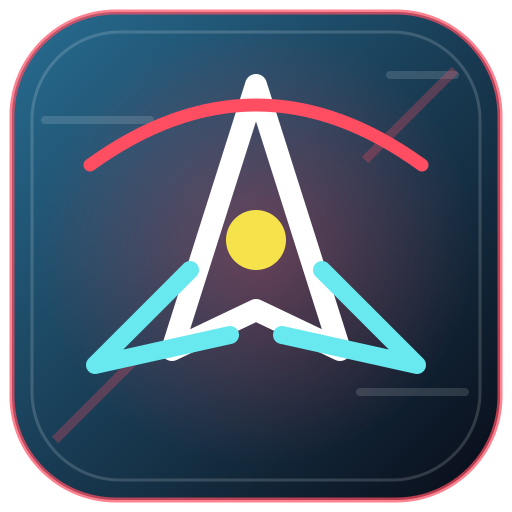

OTKAT GAME DATABASE · 15 WORLDS
Выбери свой
следующий уровень.
Открой карточку игры, чтобы перейти на её отдельную страницу. Там — описание, режимы и персональная страница загрузок именно этого проекта.
Driftline: Apex Circuit
RU: Дрифтлайн: трасса «Апекс»
Гараж, автомобили, настройка, собственные трассы и заезды.
ОТКРЫТЬ СТРАНИЦУ ИГРЫ ↗Hide & Seek
RU: Прятки
Спрячься, меняй облики и перехитри смотрителя парка.
ОТКРЫТЬ СТРАНИЦУ ИГРЫ ↗
Survival
RU: Выживание
Исследуй архипелаг, собирай ресурсы и раскрывай тайну шторма.
ОТКРЫТЬ СТРАНИЦУ ИГРЫ ↗
Arena
RU: Арена
Турниры, испытания и сражения на арене.
ОТКРЫТЬ СТРАНИЦУ ИГРЫ ↗Forgotten
RU: Забытое
Найди пропавшего брата в месте, которое меняет прошлое.
ОТКРЫТЬ СТРАНИЦУ ИГРЫ ↗Skyrun
RU: Небесный забег
Преодолевай высоту, проходи маршруты и восстанавливай маяки.
ОТКРЫТЬ СТРАНИЦУ ИГРЫ ↗Racing
RU: Гонки
Скорость, трассы и гонки в мегаполисе будущего.
ОТКРЫТЬ СТРАНИЦУ ИГРЫ ↗
Space
RU: Космос
Исследуй космос и раскрой тайну исчезнувшей планеты.
ОТКРЫТЬ СТРАНИЦУ ИГРЫ ↗
Magic
RU: Магия
Заклинания, артефакты и магические испытания.
ОТКРЫТЬ СТРАНИЦУ ИГРЫ ↗
Prehistoric
RU: Доисторический мир
Древняя долина, динозавры и временной разлом.
ОТКРЫТЬ СТРАНИЦУ ИГРЫ ↗
Neon Depths
RU: Неоновые глубины
Исследуй меняющиеся этажи неонового подземелья.
ОТКРЫТЬ СТРАНИЦУ ИГРЫ ↗Last Stand: Swarm
RU: Последний рубеж: Рой
Отбивай волны врагов и выбирай усиления.
ОТКРЫТЬ СТРАНИЦУ ИГРЫ ↗Tiny Kingdoms
RU: Маленькие королевства
Расширяй владения, собирай ресурсы и нанимай отряды.
ОТКРЫТЬ СТРАНИЦУ ИГРЫ ↗
Orbital Rush
RU: Орбитальный рывок
Управляй кораблём, сражайся с противниками и боссами.
ОТКРЫТЬ СТРАНИЦУ ИГРЫ ↗Cozy Valley
RU: Уютная долина
Выращивай урожай и развивай уютную ферму.
ОТКРЫТЬ СТРАНИЦУ ИГРЫ ↗Загрузки не смешиваются в общем списке: у каждой игры своя отдельная страница. Установочные пакеты появятся после сборки и проверки; пока доступны браузерные версии и прототипы на страницах проектов.